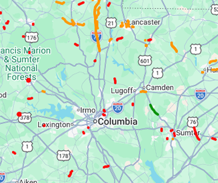

Road Conditions & Hazards
Notable Hazards
- I-77 NB b/t exits 22–27
- Uneven surface due to construction
- US-21 b/t Ridgeway & Great Falls
- Numerous potholes and tar snakes
- Rolling Hills Rd
- No lane markings, sand and gravel on edges

